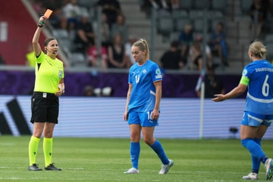

Finland secured their first victory at a Women’s European Championship in 16 years with a narrow win against 10-player Iceland. Katariina Kosola’s superb second-half strike proved enough after Hildur Antonsdóttir had seen red.
After all the buildup, the tournament finally got under way in the picturesque town of Thun. Sweltering under the heat of the Swiss summer, Iceland and Finland took to the field in the opening day’s early kick-off.
Thorsteinn Halldórsson’s Iceland came in as favourites due to their recent form but this group is considered by many as too close to call and this encounter was predicted to be a tight and compact affair.
Ranked 12 places higher than Finland, Halldórsson named an unchanged lineup from the one that had beaten Serbia 3-1 in a friendly last week. They received a boost pre-tournament with the return of the captain, Glódís Viggósdóttir, who had missed the final few months of the Bundesliga season with a knee injury. Inter’s goalkeeper Cecilía Rúnarsdóttir made her Euros bow while Sveindis Jónsdóttir, widely considered to be their best attacking outlet, took up her place on the wing.
It had been a week of mixed fortunes for Finland when Adelina Engman was ruled out of the tournament on Tuesday. The 21-year-old Anni Hartikainen was called up in her place but was unable to join up with the team until after their opener. The positive, however, was the return to fitness of the integral Natalia Kuikka who made it through a friendly with the Netherlands unscathed. The captain and all-time top scorer Linda Sällström led the line, becoming the oldest Finnish player to appear at the Euros at 36 years and 354 days.
With storm clouds looming and the weather threatening to break, the game got under way in front of a jubilant crowd. Over 2,000 Iceland fans were expected to have travelled and were making themselves heard in their customary fashion.
Despite the difference in rankings and a bright start from Halldórsson’s side, Finland settled into the game and dominated much of the first half. Sällström had a close-range shot blocked and her team gathered momentum as they were afforded space in central areas. Rúnarsdóttir was named the Serie A goalkeeper of the year this season and had to be at her impressive best to keep out the lively Kosola.
Iceland started to create opportunities of their own. Jónsdóttir’s dangerous long throw is notorious and she caused problems at the near post with her trademark move.
Hildur Antonsdóttir is shown a red card by Katalin Kulcsar.Photograph: Alessandra Tarantino/AP
The Angel City winger had been pinned back by the impressive Emma Koivisto but was at the heart of the best move of the first half. Breaking on to Karólína Vilhjálmsdóttir’s cutting ball, she delivered the perfect pass across the face of goal for Sandra Jessen, only for Koivisto to make a stunning block.
Chances were traded after the break with Iceland coming close when Koivisto blocked Alexandra Jóhannsdóttir’s powerful goal-bound effort with her nose.
The encounter, however, turned on its head 13 minutes into the second half when Antonsdóttir received a red card to reduce Iceland to 10 players. The midfielder was shown a yellow card shortly before and left a foot in on Eveliina Summanen that gave the referee, Katalin Kulcsar, no choice.
With the numerical advantage, Finland saw their chance to take control and found the breakthrough in superb fashion. Kosola had been a headache for the Iceland defence all evening and a dazzling piece of footwork after receiving Summanen’s crossfield pass saw her find space in the box. She unleashed a fierce shot that gave Rúnarsdóttir no chance.
Iceland tried to find a way back into the game but Finland defended well. The Helmarit celebrations were joyous as they kicked their tournament off in fine fashion and Marko Saloranta’s side will be brimming with confidence ahead of Sunday’s match against Norway.